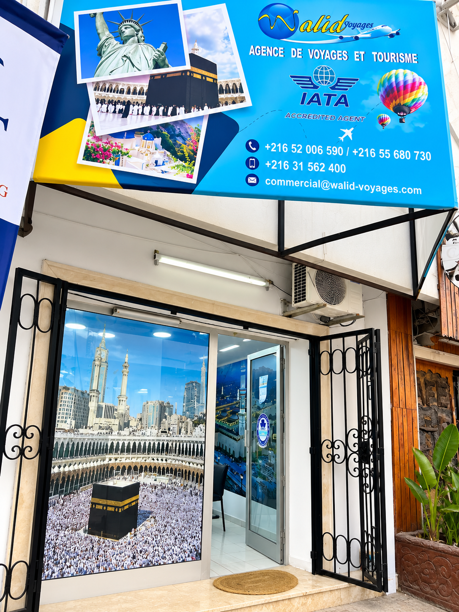
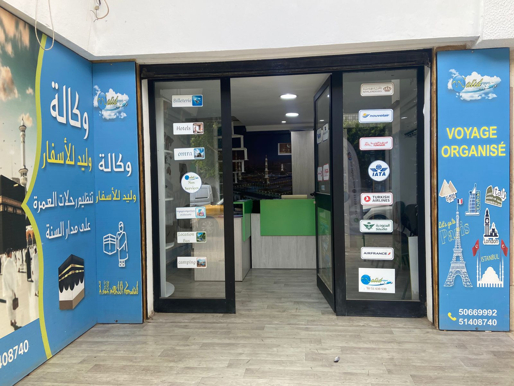
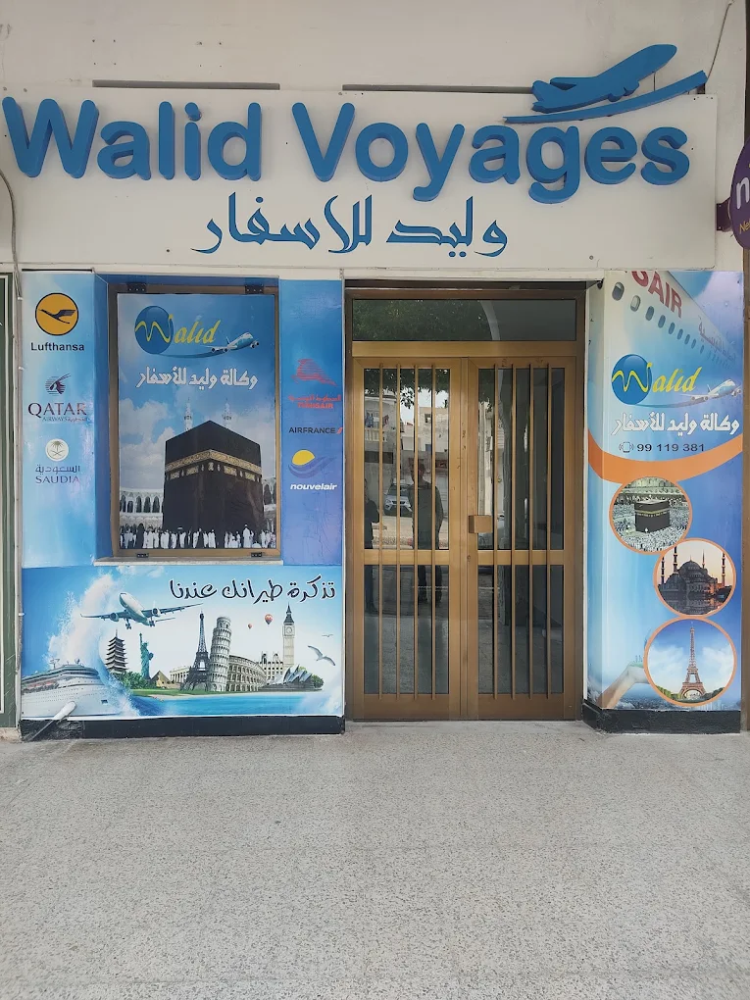
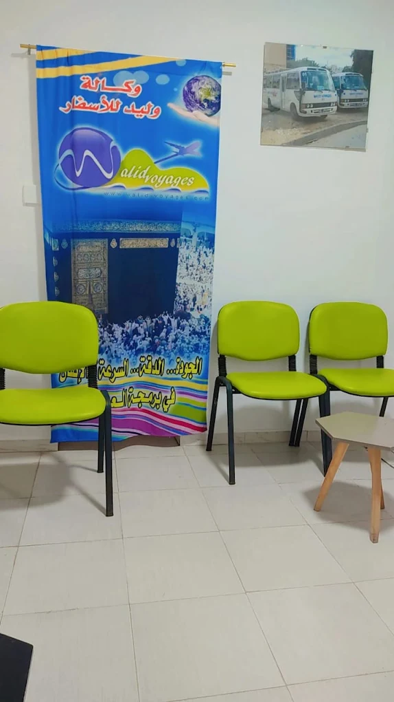
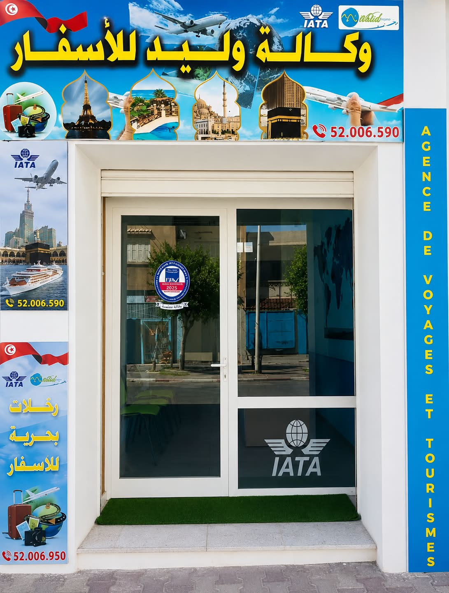

مرافقة من الفريق
نعاونك تختار الإقامة اللي تناسب طلبك.
نزل على البحر، عطلات عائلية وإقامات راقية في تونس. اختار الوجهة اللي تحب عليها وخلي وليد للأسفار يعاونك في الحجز.


اكتشف مجموعة من النزل في تونس. بعضها موجود على موقع وليد للأسفار والبقية اقتراحات نتحقّقوا من توفّرها وقت الطلب.
الصور للتوضيح فقط ومش بالضرورة صور النزل الحقيقية. التصنيف والأسعار والتوفّر لازم يتم التأكد منهم قبل الحجز.
نعاونك تختار الإقامة اللي تناسب طلبك.
الحمامات وسوسة وجربة والمهدية ووجهات أخرى.
عطلات عائلية، بحر، راحة وإقامات راقية.
نثبتوا معاك الأسعار والشروط والتوفّر.
اكتشف مدن تونس الساحلية.
فريق وليد للأسفار يعاونك ترتّب إقامتك، تقارن العروض وتسأل على التفاصيل قبل ما تأكد الحجز.
احكي مع فريقنا ↗
Nouveaux départs publiés par notre équipe depuis l’administration.
Des voyages et séjours qui se renouvellent depuis l’administration.
اختار أقرب وكالة ليك وشوف العنوان، تصاور الوكالة، الموقع على Google Maps والبطاقة الإلكترونية.

⌖ Sousse, Tunisie

⌖ Lafayette, Tunis


⌖ Mahdia, Tunisie

⌖ Avenue Habib Bourguiba, Moknine

⌖ Kasserine, Tunisie
⌖ Rue de la Liberté, Swassi, Mahdia
السعر يتبدّل حسب التاريخ وعدد الأشخاص ونوع الغرفة والتوفّر. اتصل بوليد للأسفار على عرض محيّن.
لا. القائمة فيها نزل موجودة على موقعنا واقتراحات أخرى، والتوفّر لازم يتأكد قبل الحجز.
لا. الصور توضيحية. اطلب الصور والمعلومات الرسمية الخاصة بالنزل قبل التأكيد.
التعليقات المنشورة تكون مرسلة من المسافرين ويوافق عليها الفريق قبل عرضها. ما نعرضوش تقييم من غير بيانات منشورة.
Votre commentaire sera publié après modération de Walid Voyages.